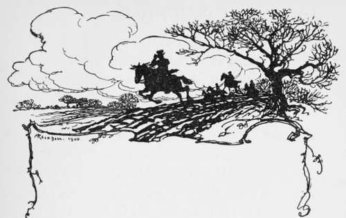

The Whipper-In. Continued
Description
This section is from the book "Hunting: A Manual of Fox, Hare, Stag & Otter Hunting", by J. Otho Paget. Also available from Amazon: Hunting: A Manual of Fox, Hare, Stag & Otter Hunting.
The Whipper-In. Continued
A good voice is an advantage to a whip, but let him beware how and when he uses it. Men with good voices are very apt to be too fond of making themselves heard on every occasion. A quick ear is a more desirable quality than a good voice, and the man who is always making a noise will hear little. A whip should never at any moment attempt to cheer on hounds, for it is of the utmost importance that they should hear only one voice. He should keep his ears and his eyes open, but his mouth should be shut. The man who is always trying to hunt hounds when the huntsman is not looking is not fit for the post of whip, and the sooner he is drafted the better it will be for the establishment he serves. There must be only one huntsman, and however bad he may be it will not improve matters for some one else to attempt to do his work. If a huntsman is never with his hounds, the master should get rid of him as soon as possible ; but until he is dismissed or pensioned off, the whips ought to remember he is the only person who should handle the pack. Occasionally the hardest riding huntsman will, through some cause or other, get left behind, and then the ambitious whip will proceed to cast hounds the moment they check, urged on by the thoughtless members of the hunt. In doing this he is exceeding his duty and taking an unwarrantable liberty. Let him on these occasions stand still and watch the pack make their own cast, and try for the scent themselves. Then, if they fail to hit the line, and the huntsman is nowhere in sight, he may take on himself the responsibility of hunting them. I am supposing in a case of this kind that the master is not with hounds, as, of course, otherwise he will give the necessary order, or he may decide to assume command himself. It is a great advantage for hounds to be sometimes allowed rather more than the usual time to recover the scent, and all the whip need do is to civilly request the field to stand perfecdy still.
When a whip goes on to the down-wind side of a covert that hounds are about to draw, he should cast a quick glance over the surrounding country the moment he arrives at his post, for travelling foxes are ever on the alert, and will often leave their kennel when the field are still a mile away. Seeing nothing in the distance, he will then restrict his view to the limits of the covert, and not for one moment must he allow his eyes to wander elsewhere, until a note on the huntsman's horn tells him there is no further need for watchfulness. If you take your eyes off a ride or other small space you are watching for one second, the fox is certain to take advantage of that moment to cross, and you fail to view him. A whip at his post of observation should never allow himself to be drawn into conversation by any of the field who may be standing near him. He should place himself in such a position that he can see the fox without himself being seen, and when he halloas him away, he must not do it too soon or he will head him back.
A whip who is a good rider, and is at the same time of an obliging disposition, is very often in danger of being spoilt by the flattery of the field. He should recollect the horse he rides does not belong to him, and that he rides it for the purpose of attending on the huntsman. He is the servant of the master, and if he is larking over fences for the amusement of men who do not employ him, he is not doing the duty for which he is paid. He must, however, be always civil to every member of the field, and he must take particular care never to offend a farmer by word or deed. A farmer does not always walk about in best broadcloth, and he very naturally resents any rudeness on his own land from a whip, who should remember that his conduct reflects indirectly on his master.
I am glad to say that hunt-servants, as a rule, are a very superior class of men, and few are ever guilty of behaviour to disgrace their profession. Drink is their greatest temptation, and in the downward course which leads to dismissal, every one is ready to lend them a helping hand. Of course, it is all done out of kindness, and with the desire of showing goodwill to the hunt. All are eager to give the hunt-servants strong drink, and the stronger the stuff the more they feel they have exerted the duties of hospitality. Therefore it will be seen that the hunt-servant must beware of his friends, and must depend on his own powers of self-denial to uphold him in the slippery path. One of the occasions which has been the beginning of many a good man's downfall, is the taking out of puppies to walk, a task which usually falls to the first whip. He may have to call at twenty different houses, and he may be quite certain of being offered spirits at every one, so that unless he has made up his mind to say no, he will be more than half-drunk before he has completed his round. When a master of hounds engages either a huntsman or a whip, the one thing he insists on is sobriety, and no one can expect to get a good place about whom there has been the faintest whisper of intemperance.
I have up to now spoken only of the duties of the first whip, but what I have said will apply equally to the second. There are different rules in different establishments ; but I think myself that when hounds are running a second whip's place is not in close attendance on them, though for the first part of the run he may be somewhere handy. On nearing coverts he should get on to view the fox away, and when thoroughly tired should never lose sight of him.
When hounds are left behind it is the second whip who will have to go back again, and he should get to the front again without tiring his horse. He has plenty of opportunities for showing whether his head is screwed on the right way, and it is at this period of his life that he will be able to acquire a knowledge of foxes' habits that will be most useful to him on promotion to the post of huntsman.
The second whip has in reality to use his brains more than the first, for the latter has only to wait on the huntsman, whilst the former must think for himself. If he is a newcomer to the country he should as speedily as possible set himself the task of finding out the locality of every covert and earth in the hunt.
It is as second whip that a man shows whether or not he has the makings of a huntsman, and if he has not done well in one position, you may be nearly certain he will not be successful in the other. The second whip should be studying the ways of foxes, and on his promotion to be first, he can finish his education by watching hounds.
Of course, the ambition of every one who enters a kennel is to be huntsman, and he cannot fit himself better for that post than by closely observing the various duties of the previous steps. No one should become a hunt-servant who is not exceptionally keen on the sport, for it is an extremely hard life, and it is only the pleasure enjoyed in following it that makes light of its hardships.
The whip who is desirous of getting on in his profession will not rest content with what he may learn in the field, but by hard work and attention to the details of the kennel, he will make himself familiar with the most important part of a huntsman's knowledge.

Continue to: